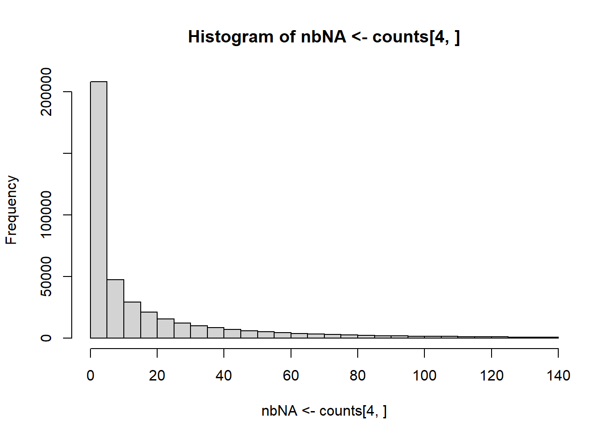

Chapter 2 Preprocessing
In this section, I talk about conversion, quality control and imputation. Conversion is also discussed in 1.3.
2.1 Conversion and quality control of PLINK files
PLINK is very efficient for conversion and quality control of multiple formats, so I provide some wrappers to PLINK in {bigsnpr}, for ease of use directly from :
download_plink()anddownload_plink2()for downloading the latest stable versions of PLINK 1.9 and 2.0 (Chang et al., 2015).snp_plinkQC()for quality control (QC) and conversion to bed/bim/fam.snp_plinkKINGQC()for QC on relatedness based on KING-robust kinship estimator (Manichaikul et al., 2010). Usingmake.bed = FALSEallows for computing related pairs only, i.e. reporting a data frame without producing new bed/bim/fam files. Note that monozygotic twins or identical samples have a KING coefficient of \(0.5\), not \(1\); \(0.25\) = siblings and parents; \(2^{-3}\) = second-degree relatives (e.g. grandparents, uncles); \(2^{-4}\) = third-degree relatives (e.g. cousins). You can use a threshold of \(2^{-4.5} \approx 0.0442\) to remove all these related individuals (one from each pair, or all for PCA).snp_plinkIBDQC()for QC based on identity-by-descent (IBD) computed by PLINK using its method-of-moments. I prefer the KING one.snp_plinkRmSamples()for producing new PLINK files after having removed some individuals.For any other PLINK function, I recommend calling PLINK directly from thanks to system calls and package {glue}, e.g.
#> PLINK v1.9.0-b.7.7 64-bit (22 Oct 2024)
2.2 Imputation
Note that most functions from {bigstatsr} and {bigsnpr} do NOT handle missing values, except for some of the bed_ functions.
Simple imputation (e.g. by the mean) of a ‘double’ FBM can be performed by blocks using e.g. the code from this vignette.
In {bigsnpr}, to perform simple imputation of genotyped data, you can use snp_fastImputeSimple(). You can also use the (much) slower snp_fastImpute() that uses XGBoost models to impute genotyped data (Privé, Aschard, Ziyatdinov, & Blum, 2018).
If you have access to imputed data from large external reference panels, it is even better, and you can read this data as dosages in a bigSNP as discussed in 1.3.
2.3 Example
For the exercises, we will use the data provided in Reed et al. (2015).
This can be downloaded using
zip <- runonce::download_file(
"https://figshare.com/ndownloader/files/38019072",
dir = "tmp-data", fname = "GWAS_data.zip")
unzip(zip, exdir = "tmp-data", overwrite = FALSE)For some reason, this data is not ordered by chromosome and position; we can use PLINK to get an ordered version of this using
library(bigsnpr)
plink <- download_plink("tmp-data")
system(glue::glue(
"{plink} --bfile tmp-data/GWAS_data",
" --make-bed --out tmp-data/GWAS_data_sorted"
))#> PLINK v1.9.0-b.7.7 64-bit (22 Oct 2024) cog-genomics.org/plink/1.9/
#> (C) 2005-2024 Shaun Purcell, Christopher Chang GNU General Public License v3
#> Logging to tmp-data/GWAS_data_sorted.log.
#> Options in effect:
#> --bfile tmp-data/GWAS_data
#> --make-bed
#> --out tmp-data/GWAS_data_sorted
#>
#> 32574 MB RAM detected; reserving 16287 MB for main workspace.
#> 500000 variants loaded from .bim file.
#> 1401 people (937 males, 464 females) loaded from .fam.
#> 933 phenotype values loaded from .fam.
#> Using 1 thread (no multithreaded calculations invoked).
#> Before main variant filters, 1401 founders and 0 nonfounders present.
#> Calculating allele frequencies... 0%1%2%3%4%5%6%7%8%9%10%11%12%13%14%15%16%17%18%19%20%21%22%23%24%25%26%27%28%29%30%31%32%33%34%35%36%37%38%39%40%41%42%43%44%45%46%47%48%49%50%51%52%53%54%55%56%57%58%59%60%61%62%63%64%65%66%67%68%69%70%71%72%73%74%75%76%77%78%79%80%81%82%83%84%85%86%87%88%89%90%91%92%93%94%95%96%97%98%99% done.
#> Total genotyping rate is 0.977593.
#> 500000 variants and 1401 people pass filters and QC.
#> Among remaining phenotypes, 463 are cases and 470 are controls. (468
#> phenotypes are missing.)
#> --make-bed to tmp-data/GWAS_data_sorted.bed + tmp-data/GWAS_data_sorted.bim +
#> tmp-data/GWAS_data_sorted.fam ... 0%1%2%3%4%5%6%7%8%9%10%11%12%13%14%15%16%17%18%19%20%21%22%23%24%25%26%27%28%29%30%31%32%33%34%35%36%37%38%39%40%41%42%43%44%45%46%47%48%49%50%51%52%53%54%55%56%57%58%59%60%61%62%63%64%65%66%67%68%69%70%71%72%73%74%75%76%77%78%79%80%81%82%83%84%85%86%87%88%89%90%91%92%93%94%95%96%97%98%99%done.As you can see from PLINK output, this data contains 1401 individuals and 500,000 variants, with a small percentage of missing values (2.2%).
We can then perform some quality control using
#> PLINK v1.9.0-b.7.7 64-bit (22 Oct 2024) cog-genomics.org/plink/1.9/
#> (C) 2005-2024 Shaun Purcell, Christopher Chang GNU General Public License v3
#> Logging to tmp-data/GWAS_data_sorted_QC.log.
#> Options in effect:
#> --bfile tmp-data/GWAS_data_sorted
#> --geno 0.1
#> --hwe 1e-50
#> --maf 0.01
#> --make-bed
#> --mind 0.1
#> --out tmp-data/GWAS_data_sorted_QC
#>
#> 32574 MB RAM detected; reserving 16287 MB for main workspace.
#> Allocated 12215 MB successfully, after larger attempt(s) failed.
#> 500000 variants loaded from .bim file.
#> 1401 people (937 males, 464 females) loaded from .fam.
#> 933 phenotype values loaded from .fam.
#> 0 people removed due to missing genotype data (--mind).
#> Using 1 thread (no multithreaded calculations invoked).
#> Before main variant filters, 1401 founders and 0 nonfounders present.
#> Calculating allele frequencies... 0%1%2%3%4%5%6%7%8%9%10%11%12%13%14%15%16%17%18%19%20%21%22%23%24%25%26%27%28%29%30%31%32%33%34%35%36%37%38%39%40%41%42%43%44%45%46%47%48%49%50%51%52%53%54%55%56%57%58%59%60%61%62%63%64%65%66%67%68%69%70%71%72%73%74%75%76%77%78%79%80%81%82%83%84%85%86%87%88%89%90%91%92%93%94%95%96%97%98%99% done.
#> Total genotyping rate is 0.977593.
#> 27390 variants removed due to missing genotype data (--geno).
#> --hwe: 91 variants removed due to Hardy-Weinberg exact test.
#> 67856 variants removed due to minor allele threshold(s)
#> (--maf/--max-maf/--mac/--max-mac).
#> 404663 variants and 1401 people pass filters and QC.
#> Among remaining phenotypes, 463 are cases and 470 are controls. (468
#> phenotypes are missing.)
#> --make-bed to tmp-data/GWAS_data_sorted_QC.bed +
#> tmp-data/GWAS_data_sorted_QC.bim + tmp-data/GWAS_data_sorted_QC.fam ... 0%1%2%3%4%5%6%7%8%9%10%11%12%13%14%15%16%17%18%19%20%21%22%23%24%25%26%27%28%29%30%31%32%33%34%35%36%37%38%39%40%41%42%43%44%45%46%47%48%49%50%51%52%53%54%55%56%57%58%59%60%61%62%63%64%65%66%67%68%69%70%71%72%73%74%75%76%77%78%79%80%81%82%83%84%85%86%87%88%89%90%91%92%93%94%95%96%97%98%99%done.404,663 variants are remaining after this quality control; we can then read this data into an R object called bigSNP using
#> [1] "C:\\Users\\au639593\\OneDrive - Aarhus universitet\\Desktop\\statgen-course\\tmp-data\\GWAS_data_sorted_QC.rds"#> List of 3
#> $ genotypes:Reference class 'FBM.code256' [package "bigstatsr"] with 16 fields
#> ..and 26 methods, of which 12 are possibly relevant:
#> .. add_columns, as.FBM, bm, bm.desc, check_dimensions,
#> .. check_write_permissions, copy#envRefClass, initialize,
#> .. initialize#FBM, save, show#envRefClass, show#FBM
#> $ fam :'data.frame': 1401 obs. of 6 variables:
#> ..$ family.ID : int [1:1401] 10002 10004 10005 10007 10008 10009 10010 10011 10012 10013 ...
#> ..$ sample.ID : int [1:1401] 1 1 1 1 1 1 1 1 1 1 ...
#> ..$ paternal.ID: int [1:1401] 0 0 0 0 0 0 0 0 0 0 ...
#> ..$ maternal.ID: int [1:1401] 0 0 0 0 0 0 0 0 0 0 ...
#> ..$ sex : int [1:1401] 1 2 1 1 1 1 1 2 1 2 ...
#> ..$ affection : int [1:1401] 1 1 2 1 2 2 2 1 2 -9 ...
#> $ map :'data.frame': 404663 obs. of 6 variables:
#> ..$ chromosome : int [1:404663] 1 1 1 1 1 1 1 1 1 1 ...
#> ..$ marker.ID : chr [1:404663] "rs12565286" "rs3094315" "rs2980319" "rs2980300" ...
#> ..$ genetic.dist: int [1:404663] 0 0 0 0 0 0 0 0 0 0 ...
#> ..$ physical.pos: int [1:404663] 721290 752566 777122 785989 798959 947034 949608 1018704 1041700 1129672 ...
#> ..$ allele1 : chr [1:404663] "G" "C" "A" "A" ...
#> ..$ allele2 : chr [1:404663] "C" "T" "T" "G" ...
#> - attr(*, "class")= chr "bigSNP"We can read and store some extra information on the individuals (e.g. some phenotypes):
clinical <- bigreadr::fread2("tmp-data/GWAS_clinical.csv")
# Get the same order as for the genotypes
# (to match over multiple columns, use `vctrs::vec_match()`)
ord <- match(obj.bigsnp$fam$family.ID, clinical$FamID)
pheno <- clinical[ord, ]
# Quick check
stopifnot(all.equal(obj.bigsnp$fam$sex, pheno$sex))
# Update the $fam component (could have used `dplyr::left_join()` also)
obj.bigsnp$fam <- cbind(obj.bigsnp$fam, pheno[-c(1, 3)])Recall that this data contains some missing values; you can get some counts per variant using
#> [,1] [,2] [,3] [,4] [,5] [,6] [,7] [,8]
#> 0 1247 958 1057 988 831 1201 496 386
#> 1 131 362 316 370 502 115 676 730
#> 2 6 66 28 25 67 7 165 216
#> <NA> 17 15 0 18 1 78 64 69
We can e.g. perform a quick imputation by the mean using
#> [,1] [,2] [,3] [,4] [,5] [,6] [,7] [,8]
#> 0 1247 958 1057 988 831 1201 496 386
#> 1 131 362 316 370 502 115 676 730
#> 2 6 66 28 25 67 7 165 216
#> <NA> 0 0 0 0 0 0 0 0
#> 0.01 0 0 0 0 0 0 0 0
#> 0.02 0 0 0 0 0 0 0 0
#> [ reached getOption("max.print") -- omitted 196 rows ]#> [,1] [,2] [,3] [,4] [,5] [,6] [,7] [,8]
#> 0 1247 958 1057 988 831 1201 496 386
#> 1 131 362 316 370 502 115 676 730
#> 2 6 66 28 25 67 7 165 216
#> <NA> 17 15 0 18 1 78 64 69G still has missing values, but G2 does not. Note that both use the same underlying data (the same binary file .bk on disk), the difference is that they use a different code to decode the underlying data:
#> [1] 0 1 2 NA NA NA NA NA NA NA NA NA NA NA NA NA NA NA NA NA NA NA NA
#> [24] NA NA NA NA NA NA NA NA NA NA NA NA NA NA NA NA NA NA NA NA NA NA NA
#> [47] NA NA NA NA
#> [ reached getOption("max.print") -- omitted 206 entries ]#> [1] 0.00 1.00 2.00 NA 0.00 1.00 2.00 0.00 0.01 0.02 0.03 0.04 0.05 0.06
#> [15] 0.07 0.08 0.09 0.10 0.11 0.12 0.13 0.14 0.15 0.16 0.17 0.18 0.19 0.20
#> [29] 0.21 0.22 0.23 0.24 0.25 0.26 0.27 0.28 0.29 0.30 0.31 0.32 0.33 0.34
#> [43] 0.35 0.36 0.37 0.38 0.39 0.40 0.41 0.42
#> [ reached getOption("max.print") -- omitted 206 entries ]To always use G2 (with the new code256) and the extended obj.bigsnp$fam, you need to save obj.bigsnp again using
You can then re-attach this data in another R session later using snp_attach("tmp-data/GWAS_data_sorted_QC.rds").